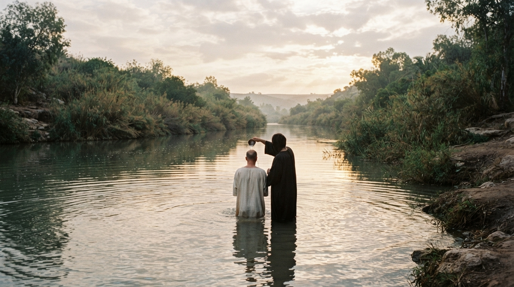

從耶穌受洗的禱告，看見天為你我而開
▼ 請向下滑動開始聚會 ▼
聚會焦點：本週我們不只看一段古老的受洗記載， 更要問一個很現代、很切身的問題—— 在忙碌到幾乎喘不過氣的日子裡，我的「天」還開著嗎？
路加記載耶穌受洗時，特別強調了一個細節—— 耶穌是在「禱告的時候」，天就開了。 這不是偶然的描寫。在路加福音中，禱告是耶穌事奉的核心力量來源， 作者一再記錄耶穌以禱告作為工作中最重要的支撐 （參 5:16、6:12、9:18、28~29、11:1、22:32、41、23:34、46）。
「天開了」是象徵性的說法，表明上帝與耶穌之間親密的關係， 也象徵物質世界與屬靈世界之間的門暫時打開， 上帝的啟示直接臨到人間。天開了，不是因為耶穌做了什麼驚天動地的大事， 而是因為祂在那裡禱告。
耶穌是無罪的，約翰所施的是悔改的洗，耶穌為何要接受？ 這洗禮對耶穌而言不是認罪的洗禮，而是膏抹禮—— 如同舊約時代大祭司和君王就職時需要先受膏。 耶穌開始傳道時「年紀約有三十歲」，正符合利未人三十歲正式在聖殿服侍的律法規定（民 4 章）， 也是大衛登基的年齡（撒下 5:4）。 透過這地上的洗禮，聖父用聖靈膏聖子， 這是從天上而來的膏抹禮，也是三一真神三個位格同時顯現的獨特時刻。

這節經文呈現了三位一體上帝同時顯現的場景： 聖子在水裡受洗，聖靈如鴿子降臨，聖父從天上發聲。 天父所說的「你是我的愛子，我喜悅你」， 同時呼應了詩篇 2:7（君王登基的宣告） 和以賽亞書 42:1（受苦僕人的預言）， 將彌賽亞的君王身分與僕人身分合而為一。
「我喜悅你」並非一般「我喜歡你」的意思， 而是聚焦於上帝為人類救恩所定的計劃集中在耶穌身上—— 耶穌是上帝救贖計劃的成就者。 天開了、聖靈降下、天父發聲，這三件事同時發生， 標誌著舊約時代落下帷幕，新約時代從此展開。
天父在耶穌開始服事之前就宣告「你是我的愛子」。 這個順序非常重要：先是身分，後是事工。 我們很容易反過來活——用做多少事來證明自己有多少價值。 但天上的聲音提醒我們：在我們做任何事之前，天父已經喜悅我們了。
耶穌是在「正禱告的時候」天就開了。這提醒我們， 屬靈的突破往往發生在禱告之中。 我們的日常禱告是否常常流於形式、匆匆帶過？ 耶穌的事奉以禱告為根基，我們在教會的服事—— 無論是長老、執事、主日學老師、聖歌隊員—— 是否也以禱告作為服事的根基？
如果我們的服事很忙碌卻很少禱告， 可能正在靠自己的力量而非聖靈的力量。 正如耶穌在曠野、在山上都獨自禱告， 我們也需要在生活中刻意分別出安靜禱告的時間， 讓「天開」的經驗成為我們服事的常態。
本週操練：每天選一段固定的 10 分鐘—— 通勤的車上、午休的桌前、睡前的床邊—— 關掉通知，單單向天父說話，也聽祂說話。
天父在耶穌開始傳道之前就宣告「你是我的愛子」。 耶穌在曠野受試探時，撒但的第一個試探正是針對這個身分： 「你若是上帝的兒子……」（4:3）。
在我們的文化處境中，很多信徒——尤其是熱心服事的兄姐—— 容易陷入一種危機：以事工表現來定義自己的價值。 服事有果效就覺得自己有價值，服事遇到瓶頸就覺得自己不夠好。 但天父的宣告順序很清楚： 先確認「你是我的愛子」，然後才差派你去事奉。 我們的價值來自於被上帝所愛、所喜悅， 而不是來自於我們做了多少。
長老教會的兄姐們，特別是在教會中承擔多項服事的同工， 需要常常回到這個根基：天父也對你說： 「你是我的愛子，我喜悅你。」 在服事的疲乏中，這個聲音是我們重新得力的源頭。
耶穌三十歲才開始公開傳道，在此之前， 祂在拿撒勒做了三十年的木匠。 這三十年不是浪費，而是道成肉身的真實預備—— 祂直接經驗了工作的辛苦、勞動者的心境， 也經歷了人生命中各樣的悲歡喜樂。
對我們而言，退休後的年日、職場上的年資、家庭中的付出， 這些看似「還沒開始服事」的階段， 都是上帝在預備我們。 長老教會中有許多兄姐在退休後才投入更多的教會服事， 之前幾十年的職場經驗和人生歷練， 正是上帝所使用來造就他人的素材。